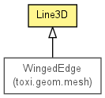

toxi.geom
Class Line3D
java.lang.Object
 toxi.geom.Line3D
toxi.geom.Line3D
- Direct Known Subclasses:
- WingedEdge
public class Line3D
- extends java.lang.Object

|
Method Summary |
Line3D.LineIntersection |
closestLineTo(Line3D l)
Calculates the line segment that is the shortest route between this line
and the given one. |
Vec3D |
closestPointTo(ReadonlyVec3D p)
Computes the closest point on this line to the given one. |
Line3D |
copy()
|
boolean |
equals(java.lang.Object obj)
|
Vec3D |
getDirection()
|
float |
getLength()
|
float |
getLengthSquared()
|
Vec3D |
getMidPoint()
|
Vec3D |
getNormal()
|
boolean |
hasEndPoint(Vec3D p)
|
int |
hashCode()
|
Line3D |
offsetAndGrowBy(float offset,
float scale,
Vec3D ref)
|
Line3D |
set(ReadonlyVec3D a,
ReadonlyVec3D b)
|
Line3D |
set(Vec3D a,
Vec3D b)
|
java.util.List<Vec3D> |
splitIntoSegments(java.util.List<Vec3D> segments,
float stepLength,
boolean addFirst)
|
static java.util.List<Vec3D> |
splitIntoSegments(Vec3D a,
Vec3D b,
float stepLength,
java.util.List<Vec3D> segments,
boolean addFirst)
Splits the line between A and B into segments of the given length,
starting at point A. |
Ray3D |
toRay3D()
|
java.lang.String |
toString()
|
| Methods inherited from class java.lang.Object |
getClass, notify, notifyAll, wait, wait, wait |
a
public Vec3D a
b
public Vec3D b
Line3D
public Line3D(ReadonlyVec3D a,
ReadonlyVec3D b)
Line3D
public Line3D(Vec3D a,
Vec3D b)
splitIntoSegments
public static final java.util.List<Vec3D> splitIntoSegments(Vec3D a,
Vec3D b,
float stepLength,
java.util.List<Vec3D> segments,
boolean addFirst)
- Splits the line between A and B into segments of the given length,
starting at point A. The tweened points are added to the given result
list. The last point added is B itself and hence it is likely that the
last segment has a shorter length than the step length requested. The
first point (A) can be omitted and not be added to the list if so
desired.
- Parameters:
a - start pointb - end point (always added to results)stepLength - desired distance between pointssegments - existing array list for results (or a new list, if null)addFirst - false, if A is NOT to be added to results
- Returns:
- list of result vectors
closestLineTo
public Line3D.LineIntersection closestLineTo(Line3D l)
- Calculates the line segment that is the shortest route between this line
and the given one. Also calculates the coefficients where the end points
of this new line lie on the existing ones. If these coefficients are
within the 0.0 .. 1.0 interval the endpoints of the intersection line are
within the given line segments, if not then the intersection line is
outside.
Code based on original by Paul Bourke:
http://local.wasp.uwa.edu.au/~pbourke/geometry/lineline3d/
closestPointTo
public Vec3D closestPointTo(ReadonlyVec3D p)
- Computes the closest point on this line to the given one.
- Parameters:
p - point to check against
- Returns:
- closest point on the line
copy
public Line3D copy()
equals
public boolean equals(java.lang.Object obj)
- Overrides:
equals in class java.lang.Object
getDirection
public Vec3D getDirection()
getLength
public float getLength()
getLengthSquared
public float getLengthSquared()
getMidPoint
public Vec3D getMidPoint()
getNormal
public Vec3D getNormal()
hasEndPoint
public boolean hasEndPoint(Vec3D p)
hashCode
public int hashCode()
- Overrides:
hashCode in class java.lang.Object
offsetAndGrowBy
public Line3D offsetAndGrowBy(float offset,
float scale,
Vec3D ref)
set
public Line3D set(ReadonlyVec3D a,
ReadonlyVec3D b)
set
public Line3D set(Vec3D a,
Vec3D b)
splitIntoSegments
public java.util.List<Vec3D> splitIntoSegments(java.util.List<Vec3D> segments,
float stepLength,
boolean addFirst)
toRay3D
public Ray3D toRay3D()
toString
public java.lang.String toString()
- Overrides:
toString in class java.lang.Object